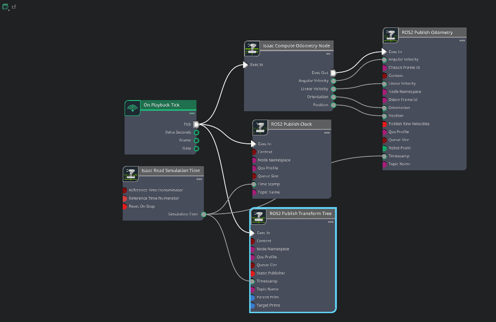
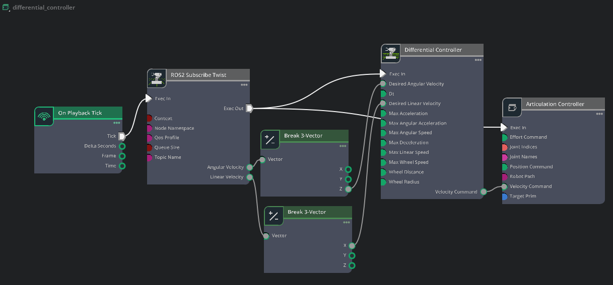
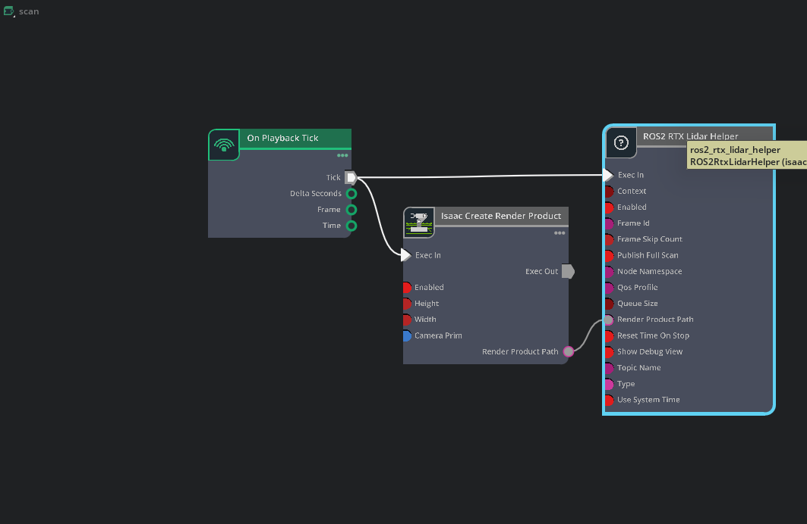

Autonomous maze navigation on a Nova Carter
ROS2Nav2SLAM ToolboxAMCLIsaac SimRViz
Architecture visuals



What it is
A ROS2 navigation stack running on a Nova Carter robot in Isaac Sim. The robot drives into a maze it has not seen before, builds a map with SLAM, localizes itself on that map with AMCL, and uses Nav2 to plan and follow a path to a goal. After the goal is set, no human input is needed.
Building the transform tree
Nav2 needs the robot's coordinate frames to be published on /tf and /tf_static. I used Isaac Sim's action graph editor to publish the transforms between the robot base and its sensors.
System architecture
Isaac Sim and the ROS2/Nav2 stack communicate through standard ROS2 topics and transforms:
- /cmd_vel (geometry_msgs/Twist) — velocity commands from Nav2/controllers to the simulated base.
- /odom (nav_msgs/Odometry) — odometry published by the simulator or robot state publisher.
- /scan (sensor_msgs/LaserScan) — lidar scans published by the simulated sensor and consumed by SLAM and local planners.
- /map (nav_msgs/OccupancyGrid) — SLAM output consumed by localization and planners.
- /tf / /tf_static — frame transforms that connect sensors, robot base, and world frames.
- /amcl_pose (geometry_msgs/PoseWithCovarianceStamped) — estimated pose used by navigation.
- /goal_pose or action goal topics — high-level goals sent to Nav2.
Isaac Sim publishes the sensor topics and subscribes to /cmd_vel, while the ROS2 nodes publish the map and pose and subscribe to the sensor data and goals. Because the two sides only communicate through topics, either side can be replaced, or replayed from a recording, when debugging.
The SLAM map came out warped. Straight walls in the maze showed up as curves in the occupancy grid.
The cause was a mismatch in update rates. The lidar published much slower than the odometry, so the robot moved and turned between lidar scans. Each scan was matched to a slightly wrong pose, which bent the walls in the map. I fixed it by raising the RTX LiDAR's scanRateBaseHz in Isaac Sim to 20 Hz.
Result
The robot navigated a maze it had not seen before, including the mapping and localization steps, fully in simulation on the Nova Carter.